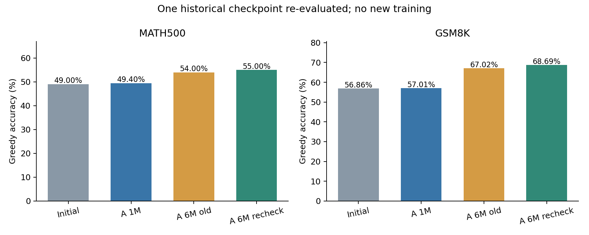

ECE285 · 旧6M checkpoint独立重评 · 原始结果保留旧6M A能否复现？与当前1M A的统一比较
至少一项原正确数没有在本轮统一协议下精确复现；具体差值和同题变化见下表。
MATH500相对当前1M A为+5.60pp，配对95%区间[+2.00, +9.20]pp；GSM8K相对当前1M A为+11.68pp，配对95%区间[+9.10, +14.33]pp。
只新增旧A checkpoint-284的1,819条回答；初始模型和当前1M A复用上一轮已验收结果。本轮优化器更新0、PRM调用0。
1. 准确率与复现结果

“正文相同”是字符串比较；旧记录没有保存原始token ID，因此不能声称旧、新生成token逐ID一致。即使正确数相同，也需看同题胜负和正文一致率。生成的代码只作为文本，不执行。
2. 为什么没有逐题精确复现
旧历史评测实际使用vLLM V0，本轮1M A与6M重评实际都使用V1；缓存、分块预填充、异步输出及内存配置也有差别。未做单因素切换，不能量化每项对分数的因果贡献。
三次使用相同vLLM 0.10.2、torch 2.8.0及同一base；历史和本次6M的LoRA权重hash相同。相同正文的验答／status不一致数均为0，全部7,276条冻结验答重算也一致，所以已观察到的得分变化来自生成内容，不能归咎于换了验答规则。本轮不再追加V0重跑或更改推理设置。
运行路径审计 · 旧6M V0日志 · 当前1M V1日志 · 本次6M V1日志。vLLM该版本的官方可复现性说明要求额外控制运行方式；greedy与固定seed本身不应被当作跨引擎逐位一致的保证。
3. 同题比较与不确定性
每项10,000次题目配对bootstrap，seed285；p值未作多重比较校正。区间反映题目抽样，不能代表训练seed方差。
4. 对训练量问题意味着什么
6M A与1M A具有相同base、初始LoRA、训练数据及主要训练参数，但来自不同训练轨迹：旧A的训练vLLM显存参数为0.3，当前为0.15，重启历史也不同。它们不能称为同一次不间断训练的两个checkpoint，差异不能全部归因额外5M token。
若较长训练的收益得到支持，说明100万pilot不足以判断训练潜力；本轮仍没有6M C-mix/C-bounded结果，因此不能证明过程奖励随规模改善或失效。本次只回答历史A的可复现性和描述性规模参照。
5. 输出健康与资源
本轮新生成861,134 token；生成进程40.5分钟，派发至CPU验收完成40.8分钟。本任务每15秒采样的进程树显存峰值约12.72GiB；可能漏掉瞬时峰值。GPU1共享，耗时不代表独占卡速度。
6. 选定实际回答审读
以下为助手的定向审读，不是人工金标准，不估计总体比例，不改变正式评分。
math500/378：一处明确的数学判断改善：6M保留了质数53，1M误删。
题目：两位质数中数字和为8的有几个？
1M列出17、53、71后，只数17、71，答2。
6M正确保留17、53、71，最终框中答3。
候选17、26、35、44、53、62、71、80中只有17、53、71为质数，正确数为3。这一例不是只改变答案提取格式。
math500/20：一处答案框一致性改善；两边正文的数学都正确。
题目：(1+2i)6−3i。
1M开头框中为6+12i，正文随后算出6+9i，但没有更新框。
6M正文算出6+9i，并在最终框中给出6+9i。
6+12i−3i=6+9i。正式指标上的得分提升来自把正文正确结论写进有效答案框，不能把这一例计作新学会复数运算。
math500/225：一处求值与声称计算结果的改善：6M得到11，1M声称程序输出15。
题目：(3x−2)(4x+1)−(3x−2)4x+1，x=4。
1M列出代入式，随后声称Python输出15，最终答15。
6M明确计算170−160+1=11，最终答11。
可直接化简为(3x−2)[(4x+1)−4x]+1=3x−1，x=4时为11。解答里的Python及output只是模型生成的文本，本次没有执行；独立核对依据是上述代数恒等式。
math500/167：一处格式退化：6M正文仍正确，但唯一框中变成问号。
题目：圆锥底面积30，高6.5，求体积。
1M开头框中为65，正文为(1/3)×30×6.5=65，判对。
6M开头框中为?，正文同样算出65，没有后续有效答案框，判错。
两边数学结论都是65；6M未满足固定答案框协议。这一例说明较长训练没有消除所有输出一致性问题，不能将此处失分解释为不会计算体积。
7. 验收与复现证据
CPU重算新旧共7,276条验答全部一致；本地再次核对8份预测文件hash、新生成1,819条原始token长度和旧checkpoint权重hash。受保护旧文件797个均未变化。
生成协议与上一轮一致：BF16、vLLM原生LoRA、adapter ID1、greedy、seed285、2048生成上限、4096上下文、batch64、相同prepared prompts与reward-repair-v3。单模型重评不执行四模型交替调度，这项调度差异单独披露，不假设逐位确定。
- Only the already-trained historical A checkpoint is re-evaluated; current A_1M and initial results are reused without new generation.
- Same prompts, questions, gold answers, base model, verifier, inference and LoRA settings as the four-model evaluation; single-model ordering replaces four-model rotation.
- Historical 6M A and current 1M A are different training trajectories, not checkpoints from one uninterrupted run. Training vLLM memory settings and restart histories differ.
- Shared-GPU timing is not isolated throughput. Floating-point and scheduling changes can alter greedy output; exact text agreement is measured rather than assumed.
- Paired bootstrap intervals cover questions, not training-seed uncertainty. One training seed does not establish robust gains.
- No changed verifier, prompt selection, new training, PRM inference or checkpoint selection. Correct final answers do not certify valid derivations.
完整比较JSON · 结果CSV · 本地取回验收 · CPU验收 · 冻结协议与hash · 同题真实回答 · 完整证据包 · 执行范围。